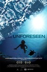
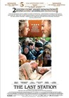
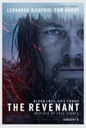
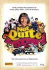
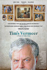
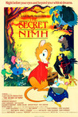
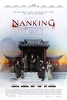
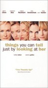
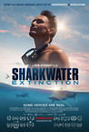
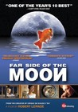

Movie Releases By Score
1801.
Housebound
Release Date:
October 17, 2014
Kylie Bucknell is forced to return to the house she grew up in when the court places her on home detention. Her punishment is made all the more unbearable by the fact she has to live there with her mother Miriam – a well-intentioned blabbermouth who's convinced that the house is haunted. Kylie dismisses Miriam's superstitions as nothing more than a distraction from a life occupied by boiled vegetables & small-town gossip. However, when she too becomes privy to unsettling whispers & strange bumps in the night, she begins to wonder whether she's inherited her overactive imagination, or if the house is in fact possessed by a hostile spirit who's not particularly thrilled about her return. [XLrator Media]
|
|

|
1802.
Children of the Revolution
Release Date:
April 30, 1997

After a mad, passionate fling on a whirlwind trip to Moscow, party girl Joan Fraser (Davis) returns home pregnant. And when little Joe is born, everyone wonders who "Daddy" is. Soon, the ball starts rolling on a hilarious sequence of events that includes a clueless husband (Rush), a lovesick double agent (Neill), and even Joseph Stalin (Abraham). (BV Entertainment)
|
1803.
The Student
Release Date:
April 21, 2017
Veniamin is a high school student who recently has become a fervent Christian, reciting Bible passages from heart for seemingly every occasion. He is convinced that the world has been lost to evil, and begins to challenge the morals and beliefs of the adults around him. When the school psychologist teaches sex ed using condoms on carrots, he tears off his clothes to rail against fornication. Neither his mother, an Orthodox priest, nor the principal can discipline the increasingly vehement evangelist. His next steps, attempting miracles and smiting sinners.
|
|

|
1804.
The Dog
Release Date:
August 8, 2014
Coming of age in the 1960s, John Wojtowicz' libido was unrestrained even by the libertine standards of the era, with multiple wives and lovers, both women and men. In August 1972, he attempted to rob a Brooklyn bank to finance his lover's sex-reassignment surgery, resulting in a fourteen-hour hostage situation that was broadcast live on television. Three years later, John was portrayed by Al Pacino as "Sonny," and his crime immortalized in one of the most iconic New York movies of all time, Dog Day Afternoon. The film had a profound influence on Wojtowicz (who pronounced his name "Woto-wits"), and when he emerged from a six-year prison sentence, he was known by his self-imposed nickname: "The Dog." Drawing upon extraordinary archival footage, the film shuffles between the 1970s and the 2000s. Touching upon the sexual revolution of the 1970s, we gain a first-hand perspective on New York's historical gay liberation movement in which Wojtowicz played an active role. In later footage, he remains a subversive force, backed by the unconditional love and headstrong wit of his mother Terry. The hows and whys of the bank robbery are recounted in gripping detail by Wojtowicz and various eyewitnesses, and don't necessarily always align with one another. [Drafthouse Films]
|
1805.
We Steal Secrets: The Story of WikiLeaks
Release Date:
May 24, 2013
Award-winning documentary director Alex Gibney turns his camera on WikiLeaks, its founder, Julian Assange, and the global debate over access to information.
|
|
1806.
Ghostbox Cowboy
Release Date:
November 30, 2018
Texan Jimmy Van Horn (David Zellner) arrives in China brimming with optimism, only to realize that acquiring a share of the country’s rapidly growing riches is not as easy as it appeared from back home. Armed with an absurd product pitch and short on the charisma or quick thinking needed to convince local businessmen of his sincerity, Jimmy soon finds himself out of funds, leaving him at the mercy of those who promise to help him stay in the place he’s gambled away his entire livelihood to be. As it turns out, there’s a lot of unpleasant work in China for guys who look like Jimmy Van Horn.
|
|

|
1807.
Cinévardaphoto
Release Date:
February 16, 2005
A collection of three short cineessays by Agnes Varda: Ydessa, The Bears, and etc. (2004), Ulysses (1982) and Salut les Cubains (1963). A photographer before she turned to film, Varda explores the medium's ability to preserve a moment for eternity, while remaining open to an array of interpretations that evolve over time. (Film Forum)
|

|
1808.
Midnight Special
Release Date:
March 18, 2016

A father (Michael Shannon), goes on the run to protect his young son, Alton (Jaeden Lieberher), and uncover the truth behind the boy’s special powers. What starts as a race from religious extremists and local law enforcement quickly escalates to a nationwide manhunt involving the highest levels of the Federal Government. Ultimately his father risks everything to protect Alton and help fulfill a destiny that could change the world forever.
|
1809.
Spa Night
Release Date:
August 19, 2016
Spa Night is a portrait of forbidden sexual awakening set in the nocturnal world of spas and karaoke bars in Los Angeles’ Koreatown. David Cho (Joe Seo), a timid 18-year-old living with his financially-struggling immigrant parents, chances upon a secret cruising spot when he takes a job at an all-male spa. There he begins to realize hidden desires that threaten his life as a dutiful son and student. [Strand Releasing]
|
|
|  |
1810.
The Unforeseen
Release Date:
February 29, 2008
Executive produced by Terrence Malick and Robert Redford, this 2008 Independent Spirit Award winning-documentary tells the story of a Texas real estate developer who enjoys meteoric success until an environmental movement and the S&L crisis threaten to undo his plans. In an era of rising home foreclosures, failing financial institutions and profound uncertainty about the future, this film prompts viewers to both reexamine the American Dream as well as their own definitions of what it means to truly grow. [The Cinema Guild]
|
1811.
Undertow
Release Date:
November 26, 2010
In this unique ghost story set on the Peruvian seaside, a married fisherman struggles to reconcile his devotion to his male lover within his town's rigid traditions. Miguel, a handsome young fisherman, and his beautiful bride, Mariela, are about to welcome their first child. But Miguel harbors a secret; he's in love with Santiago, a painter, who is ostracized by the town because he's gay. After a tragic accident occurs, Miguel must choose between sentencing Santiago to eternal torment or doing right by him and, in turn, revealing their relationship to Mariela—and the entire village. (The Film Collaborative)
|
|

|
1812.
Tickled
Release Date:
June 17, 2016
After stumbling upon a bizarre “competitive endurance tickling” video online, wherein young men are paid to be tied up and tickled, reporter David Farrier reaches out to request a story from the company. But the reply he receives is shocking—the sender mocks Farrier's sexual orientation and threatens extreme legal action should he dig any deeper. So, like any good journalist confronted by a bully, he does just the opposite: he travels to the hidden tickling facilities in Los Angeles and uncovers a vast empire, known for harassing and harming the lives of those who protest their involvement in these films. The more he investigates, the stranger it gets, discovering secret identities and criminal activity. [Magnolia Pictures]
|

|
1813.
Japan
Release Date:
March 19, 2003
Taking its title from the Japanese symbol of the rising sun, Reygadas unapologetically uses widescreen cinema, the most lush of formats, as a backdrop for exploring thorny issues of life and death. (Film Forum)
|

|
1814.
Zhantai
Release Date:
March 14, 2003
Focusing on a Chinese theatrical troupe in 1979, this film follows a group of performing artists who change with the cultural and political changes in their country.
|
1815.
Brothers
Release Date:
May 6, 2005
The lives of two very different brothers become simultaneously intertwined and thrust apart in this intense and powerful drama. (IFC Films)
|
|
|  |
1816.
The Last Station
Release Date:
December 4, 2009
After almost fifty years of marriage, the Countess Sofya, Leo Tolstoy’s devoted wife, passionate lover, muse and secretary—she’s copied out War and Peace six times…by hand!—suddenly finds her entire world turned upside down. In the name of his newly created religion, the great Russian novelist has renounced his noble title, his property and even his family in favor of poverty, vegetarianism and even celibacy. After she’s born him thirteen children!
When Sofya then discovers that Tolstoy’s trusted disciple, Chertkov—whom she despises—may have secretly convinced her husband to sign a new will, leaving the rights to his iconic novels to the Russian people rather than his very own family, she is consumed by righteous outrage. This is the last straw. Using every bit of cunning, every trick of seduction in her considerable arsenal, she fights fiercely for what she believes is rightfully hers. The more extreme her behavior becomes, however, the more easily Chertkov is able to persuade Tolstoy of the damage she will do to his glorious legacy. (Sony Picture Classics)
|

|
1817.
The Guest
Release Date:
September 17, 2014
A soldier (Dan Stevens) introduces himself to the Peterson family, claiming to be a friend of their son who died in action. After the young man is welcomed into their home, a series of accidental deaths seem to be connected to his presence.
|

|
1818.
Margin Call
Release Date:
October 21, 2011
This tense Wall Street thriller follows the staff of a high-powered brokerage firm in the 24 hours before the stock market crash of 2008. Featuring an all-star cast, Margin Call was one of the most talked about films of the Sundance Film Festival and was also the Opening Night selection of New Directors/New Films. (Roadside Attractions)
|

|
1819.
Listen Up Philip
Release Date:
October 17, 2014
As Philip (Jason Schwartzman) awaits the publication of his second novel, he feels alienated by the constant crowds and noise of his home city, his deteriorating relationship with his photographer girlfriend Ashley (Elisabeth Moss), and his own indifference to promoting the novel. So when his idol, Ike Zimmerman (Jonathan Pryce), offers his isolated summer home as a refuge, Phlip finally gets the peace and quiet to focus on his favorite subject—himself.
|

|
1820.
Regular Lovers
Release Date:
January 19, 2007
A group of young Parisians turn to a bohemian existence after the events of May 1968. (Film Distribution)
|

|
1821.
The Ritchie Boys
Release Date:
October 13, 2006
Christian Bauer's film "The Ritchie Boys" tells a story that's never been told before. It begins in Camp Ritchie, Maryland, the birthplace of modern psychological warfare, and it ends with the defeat of Germany in May of 1945. After D-Day the Ritchie Boys became a decisive force in the war. Nobody knew the enemy, his culture and his language better than they. Their mission: ascertain and break the enemy's morale. (Tangram)
|

|
1822.
The Wonders
Release Date:
October 30, 2015
A family of beekeepers living in stark isolation in the Tuscan countryside are disrupted by the simultaneous arrival of a silently troubled teenaged boy taken in as a farmhand and a reality TV show intent on showcasing the family. Both intrusions are of particular interest to the eldest daughter, Gelsomina (Maria Alexandra Lungu), who is struggling to find her footing in the world. [Oscilloscope Laboratories]
|
1823.
World on a Wire (1973)
Release Date:
July 22, 2011
A dystopic science-fiction epic, World on a Wire is German wunderkind Rainer Werner Fassbinder’s gloriously cracked, boundlessly inventive take on future paranoia. With dashes of Kubrick, Vonnegut, and Dick, but a flavor entirely his
own, Fassbinder tells the noir-spiked tale of reluctant action hero Fred Stiller, a cybernetics engineer who uncovers a massive corporate and governmental conspiracy. At risk? Our entire (virtual) reality as we know it. This long unseen three-and-a-half-hour labyrinth is a satiric and surreal look at the weird world of tomorrow from one of cinema’s kinkiest geniuses.(Janus Films)
|
|
1824.
Wonder Woman
Release Date:
June 2, 2017
Before she was Wonder Woman, she was Diana, princess of the Amazons, trained to be an unconquerable warrior. Raised on a sheltered island paradise, when an American pilot crashes on their shores and tells of a massive conflict raging in the outside world, Diana leaves her home, convinced she can stop the threat. Fighting alongside man in a war to end all wars, Diana will discover her full powers…and her true destiny.
|
|

|
1825.
Tito and the Birds
Release Date:
December 6, 2018
Tito is a shy 10-year-old boy who lives with his mother. Suddenly, an unusual epidemic starts to spread, making people sick whenever they get scared. Tito quickly discovers that the cure is somehow related to his missing father’s research on bird song. He embarks on a journey to save the world from the epidemic with his friends. Tito’s search for the antidote becomes a quest for his missing father and for his own identity.
|

|
1826.
The Hidden Blade
Release Date:
June 23, 2006
Munezo Katagiri (Nagase), an honest and low ranking samurai is trapped in a state of personal and professional imbalance. Secretly in love with his family’s maid, Kie (Tabata), Munezo begins an uneasy courtship with her, knowing that a relationship is impossible. Raised to respect traditions from the past and the demanding moral code of the samurai, circumstances have now forced Munezo to look to the future. Required to master western military strategies, particularly the art of artillery, Munezo is ordered to find and kill Yaichiro, a former friend, samurai, and brilliant swordsman. Munezo knows that he cannot beat Yaichiro with fire power alone, so he enlists the help of his old teacher, Kansai Toda, a master swordsman who entrusts Munezo with the secret and power of The Hidden Blade. (Tartan Films)
|
1827.
The Iron Ministry
Release Date:
August 21, 2015
Filmed over three years on China’s railways, The Iron Ministry traces the vast interiors of a country on the move: flesh and metal, clangs and squeals, light and dark, language and gesture. Scores of rail journeys come together into one, capturing the thrills and anxieties of social and technological transformation.
|
|

|
1828.
(500) Days of Summer
Release Date:
July 17, 2009
This is a story of boy meets girl, begins the wry, probing narrator of 500 Days of Summer, and with that the film takes off at breakneck speed into a funny, true to life and unique dissection of the unruly and unpredictable year-and-a-half of one young man’s no-holds-barred love affair.
|

|
1829.
Me and You and Everyone We Know
Release Date:
June 17, 2005
Me and You and Everyone We Know is a poetic and penetrating observation of how people struggle to connect with one another in an isolating and contemporary world. (IFC Films)
|

|
1830.
The Image Book
Release Date:
January 25, 2019
Do you still remember how, long ago, we trained our thoughts? Most often we'd start from a dream. We wondered how, in total darkness, colours of such intensity could emerge within us. In a soft, low voice. Saying great things. Surprising, deep and accurate matters. Image and words. Like a bad dream written on a stormy night. Under western eyes. The lost paradises. War is here.
|

|
1831.
The Secret Lives of Dentists
Release Date:
August 1, 2003
With a blend of humor and realism, director Alan Rudolph prods at the complexities, paradoxes and tender beauties of marriage. (Manhattan Pictures International)
|
|  |
1832.
The Revenant
Release Date:
December 25, 2015
In an expedition of the uncharted American wilderness, legendary explorer Hugh Glass (Leonardo DiCaprio) is brutally attacked by a bear and left for dead by members of his own hunting team. In a quest to survive, Glass endures unimaginable grief as well as the betrayal of his confidant John Fitzgerald (Tom Hardy). Guided by sheer will and the love of his family, Glass must navigate a vicious winter in a relentless pursuit to live and find redemption. [20th Century Fox]
|
1833.
Shaun of the Dead
Release Date:
September 24, 2004
This "rom zom com" (romantic zombie comedy) follows the bloody funny adventures of underachiever Shaun (Pegg) and his best mate Ed (Frost) as they cope with a zombie invasion of North London and attempt to rescue Shaun's girlfriend Liz (Ashfield) and his Mum (Wilton). It's going to be one hell of a weekend. (Rogue Pictures)
|
|
1834.
La grande strada azzurra
Release Date:
June 8, 2001
This, the first American theatrical release of the 1957 debut feature of Italian director Gillo Pontecorvo, tells the story of a politically torn Italian fishing village.
|
|

|
1835.
Madadayo
Release Date:
September 1, 2000
In 1943 a beloved professor begins writing full-time. A series of events ensues including old students visiting and a fire that forces him to move.
|
1836.
The Virgin Suicides
Release Date:
April 21, 2000
After the suicide death of their youngest sister, the surviving daughters of the Lisbon family descend into a deep melancholy and eventually become isolated socially and physically by their parents (Woods, Turner) within their small-town Michigan house. Their only contact with the outside world is a group of neighborhood boys who become obsessed with watching and attempting to communicate with the girls.
|
|

|
1837.
Night Across the Street
Release Date:
February 8, 2013
An elderly office worker begins to relive both real and imagined memories from his life. As stories hide within stories and the thin line between imagination and reality steadily erodes, a new world of personal remembrance and fantastic melodrama awakens. In this playfully elegiac film, loosely adapted from the fantastical short stories of Chilean writer Herman del Solar, Raoul Ruiz has crafted a final masterwork on his favorite subjects: fiction, history and life itself. [Cinema Guild]
|

|
1838.
House Party
Release Date:
March 9, 1990
Play's (Christopher Martin) parents are out of town, and he's planning the house party to end all house parties. His best friend, Kid (Christopher Reid), wants to go more than anything, knowing Sydney (Tisha Campbell), the hottest girl in school, is sure to be there. But when Kid gets into a fight at school, his father (Robin Harris) grounds him. Still determined to go, Kid sneaks out of the house and faces one calamity after another as he makes his way to Play's house and the party of the school year.
|

|
1839.
Safe
Release Date:
June 23, 1995
Carol White (Julianne Moore) lives with her husband and son in suburban comfort until she collapses one day, for no apparent reason. Her condition worsens in the weeks that follow, as she suffers from coughing fits, exhaustion, and spontaneous nose bleeds, triggered by sources as disparate as car exhaust, cologne, and the sun. Failing to find any medical explanation for her maladies, her doctor refers her to a psychiatrist, who suggests that her physical ailments are psychosomatic -- a theory echoed by her callous and increasingly frustrated husband. At her wits' end, Carol withdraws to an expensive New Age retreat for sufferers of "20th century disease," where the community's guru (Peter Friedman) champions a dubious regimen of diet, climate control, introspection, and self-love.
|
1840.
Stronger
Release Date:
September 22, 2017
Stronger is the inspiring true story of Jeff Bauman, an ordinary man who captured the hearts of his city and the world to become the symbol of hope following the infamous 2013 Boston Marathon bombing. Jeff (Jake Gyllenhaal), a 27-year-old, working-class Boston man who was at the marathon to try and win back his ex-girlfriend Erin (Tatiana Maslany). Waiting for her at the finish line when the blast occurs, he loses both his legs in the attack. After regaining consciousness in the hospital, Jeff is able to help law enforcement identify one of the bombers, but his own battle has just begun. He tackles months of physical and emotional rehabilitation with the unwavering support of Erin and his family. It is Jeff’s deeply personal account of the heroic journey that tests a family’s bond, defines a community’s pride and inspires his inner courage to overcome devastating adversity.
|
|

|
1841.
Horses of God
Release Date:
May 14, 2014
Ten year-old Yachine and his 13-year-old brother Hamid live in Sidi Moumen, an impoverished slum on the outskirts of Casablanca. Hamid, though just a child, works hard to sustain his family by any means, but eventually he gets involved with the "wrong crowd" and becomes one of the local neighborhood bosses. He continues to protect his brother Yachine - until the day he is thrown into prison. After years in jail, Hamid returns home a changed man: he is now an Islamic fundamentalist. He persuades Yachine and his pals to join, and the Imam Abou Zoubeir, their spiritual leader, begins to direct their physical and mental preparation - and one day, he tells them they have been chosen to become martyrs. [Kino Lober]
|
1842.
Afternoon of a Faun: Tanaquil Le Clercq
Release Date:
February 5, 2014
Of all the great ballerinas, Tanaquil Le Clercq may have been the most transcendent. With a body unlike any before hers, she mesmerized viewers and choreographers alike. Her elongated, race-horse physique became the new prototype for the great George Balanchine. Her unique style, humor and authenticity redefined ballet for all dancers who followed. Amazingly, she was the muse to not one great artist but two; both George Balanchine and Jerome Robbins loved her as a dancer and a woman. Balanchine married her, and Robbins created his famous version of Afternoon of a Faun for Tanny. Tanaquil Le Clercq was the foremost dancer of her day until it suddenly all stopped.
|
|
1843.
At Eternity's Gate
Release Date:
November 16, 2018
At Eternity’s Gate is a journey inside the world and mind of a person who, despite skepticism, ridicule and illness, created some of the world’s most beloved and stunning works of art. This is not a forensic biography, but rather scenes based on Vincent van Gogh’s (Willem Dafoe) letters, common agreement about events in his life that present as facts, hearsay, and moments that are just plain invented. [CBS Films]
|
|

|
1844.
Wild
Release Date:
December 3, 2014
After years of reckless behavior, a heroin addiction and the destruction of her marriage, Cheryl Strayed (Reese Witherspoon) makes a rash decision. Haunted by memories of her mother Bobbi (Laura Dern) and with absolutely no experience, she sets out to hike more than a thousand miles on the Pacific Crest Trail all on her own. [Fox Searchlight Pictures]
|

|
1845.
The Dance of Reality
Release Date:
May 23, 2014
After a 23-year hiatus, The Dance of Reality marks the triumphant return of Alejandro Jodorowsky, the visionary Chilean filmmaker behind cult classics El Topo and The Holy Mountain. In the radiantly visceral autobiographical film, a young Jodorowsky is confronted by a collection of compelling characters that contributed to his burgeoning surreal consciousness. The legendary filmmaker was born in 1929 in Tocopilla, a coastal town on the edge of the Chilean desert, where the film was shot. Blending his personal history with metaphor, mythology, and poetry, The Dance of Reality reflects Jodorowsky’s philosophy that reality is not objective but rather a “dance” created by our own imaginations.
|
1846.
Reds
Release Date:
December 25, 1981

A radical American journalist (Warren Beatty) becomes involved with the Communist revolution in Russia and hopes to bring its spirit and idealism to the United States.
|
|
|  |
1847.
Not Quite Hollywood: The Wild, Untold Story of Ozploitation!
Release Date:
July 31, 2009
Not Quite Hollywood is the wild, wonderful, untold story of “Ozploitation” films. It irreverently documents an era when Australian cinema got its gear off and showed the world a full-frontal explosion of sex, violence, horror and foot-to-the-floor action. Free-wheeling sex romps! Blood-soaked terror tales! High-octane action extravaganzas! They’re the main ingredients of NOT QUITE HOLLYWOOD, the first detailed examination and celebration of Australian genre cinema of the 70s and 80s. In 1971, with the introduction of the R-certificate, Australia’s censorship regime went from repressive to progressive virtually overnight. This cultural explosion gave birth to art house classics, such as PICNIC AT HANGING ROCK and MY BRILLIANT CAREER, but also spawned a group of demon-children: maverick filmmakers who braved assault from all quarters to bring films like ALVIN PURPLE, THE MAN FROM HONG KONG, PATRICK, TURKEY SHOOT and MAD MAX to the big screen. As explicit, violent and energetic as their northern cousins, Aussie genre movies presented a unique take on established conventions. In England, Italy and the grind houses and drive-ins of America, audiences applauded Australian homegrown marauding “rev heads” with brutish cars, spunky well-stacked heroines and stunts - unparalleled in their quality and extreme danger. Full of outrageous anecdotes, a large cast of local and International names and a genuine, infectious love of Australian movies, Not Quite Hollywood is a fast-moving journey through an unjustly forgotten cinematic era. (Magnolia)
|
1848.
Obvious Child
Release Date:
June 6, 2014
For aspiring comedian Donna Stern (Jenny Slate), everyday life as a female twenty-something provides ample material for her incredibly relatable brand of humor. On stage, Donna is unapologetically herself, joking about topics as intimate as her sex life and as crude as her day-old underwear. But when Donna gets dumped, loses her job, and finds herself pregnant just in time for Valentine’s Day, she has to navigate the murky waters of independent adulthood for the first time. As she grapples with an uncertain financial future, an unwanted pregnancy, and a surprising new suitor, Donna begins to discover that the most terrifying thing about adulthood isn’t facing it all on her own. It’s allowing herself to accept the support and love of others. And be truly vulnerable. Never failing to find the comedy and humanity in each awkward situation she encounters, Donna finds out along the way what it means to be as brave in life as she is on stage.
|
|
|  |
1849.
Tim's Vermeer
Release Date:
December 6, 2013
Inventor Tim Jenison seeks to understand the painting techniques used by Dutch Master Johannes Vermeer.
|

|
1850.
Standing in the Shadows of Motown
Release Date:
November 15, 2002
This documentary and performance film tells the Funk Brothers' saga through archival footage and still photos, narration, interviews, re-creation scenes, 20 Motown master tracks, and twelve new live performances of Motown classics with the Funk Brothers backing up Chaka Khan, Ben Harper, Bootsy Collins, Montell Jordan, Meshell Ndegeocello, Joan Osborne, and Gerald Levert. (Artisan Entertainment)
|

|
1851.
Iris
Release Date:
December 14, 2001
The true story of the romance between novelist and philosopher Iris Murdoch (Dench, Winslet) and John Bayley (Broadbent), from their meeting at Oxford, through over 40 years, including Murdoch's fight with Alzheimer's Disease.
|

|
1852.
The Original Kings of Comedy
Release Date:
August 18, 2000
Concert film that captures segments of "Kings of Comedy," a tour running from 1997-1999.
|

|
1853.
The Last Days of Disco
Release Date:
May 29, 1998
In the last months of the disco era, a popular dance club becomes the center of nightlife for a group of young people who recently arrived in Manhattan. [Castle Rock]
|

|
1854.
Chevalier
Release Date:
May 27, 2016
In the middle of the Aegean Sea, six men on a fishing trip on a luxury yacht decide to play a game. During this game, things will be compared. Things will be measured. Songs will be butchered, and blood will be tested. Friends will become rivals and rivals will become hungry. But at the end of the journey, when the game is over, the man who wins will be the best man. And he will wear on his smallest finger the victory ring: the Chevalier.
|

|
1855.
Reality
Release Date:
March 15, 2013
Luciano, a charming and affable fishmonger, becomes obsessed with being a contestant on the reality show “Big Brother” leading him down a rabbit hole of skewed perceptions and paranoia. So overcome by his dream of being on reality TV, Luciano’s own reality begins to spiral out of control. [Oscilloscope Pictures ]
|
1856.
Witness
Release Date:
February 8, 1985
Samuel Lap (Haas) a young Amish boy witnesses a murder while visiting Philadelphia with his mother Rachel (McGillis). Detective John Book (Ford) goes undercover in Amish country when he realizes the killer is a corrupt cop out to kill the only witness.
|
|

|
1857.
How to Train Your Dragon 2
Release Date:
June 13, 2014
It's been five years since Hiccup and Toothless successfully united dragons and vikings on the island of Berk. While Astrid, Snoutlout and the rest of the gang are challenging each other to dragon races (the island's new favorite contact sport), the now inseparable pair journey through the skies, charting unmapped territories and exploring new worlds. When one of their adventures leads to the discovery of a secret ice cave that is home to hundreds of new wild dragons and the mysterious Dragon Rider, the two friends find themselves at the center of a battle to protect the peace. Now, Hiccup and Toothless must unite to stand up for what they believe while recognizing that only together do they have the power to change the future of both men and dragons.
|
1858.
The Animation Show 2005
Release Date:
February 18, 2005
A collection of the world's best animated short films, personally programmed by co-producers Mike Judge (Beavis and Butt-Head, King of the Hill, Office Space) and Academy Award nominated animator Don Hertzfeldt.
|
|

|
1859.
The Loneliest Planet
Release Date:
October 26, 2012
Alex and Nica are young, in love and engaged to be married. The summer before their wedding, they are backpacking in the Caucasus Mountains in Georgia. The couple hire a local guide to lead them on a camping trek, and the three set off into a stunning wilderness, a landscape that is both overwhelmingly open and frighteningly closed. Walking for hours, they trade anecdotes, play games to pass the time of moving through space. And then, a momentary misstep, a gesture that takes only two or three seconds, a gesture that’s over almost as soon as it begins. But once it is done, it can’t be undone. Once it is done, it threatens to undo everything the couple believed about each other and about themselves. All the while, they are not alone. They are always with the guide, who witnesses their every move. The film plays off the relationship between young travelers and the places they travel to, between guide and guided. But at heart, it is a love story -- a tale about betrayal, both accidental and deliberate, about masculinity, failure and the ambiguities of forgiveness. (IFC Films)
|

|
1860.
Garry Winogrand: All Things are Photographable
Release Date:
September 19, 2018
Decades before digital technology transformed how we make and see pictures, Garry Winogrand (1928-1984) made hundreds of thousands of them with his 35mm Leica, creating an encyclopedic portrait of America from the late 1950s to the early 1980s in the process. When he died suddenly at age 56, Winogrand left behind more than 10,000 rolls of film—more than a quarter of a million pictures! These images capture a bygone era: the New York of Mad Men and the early years of the Women’s Movement, the birth of American suburbs, and the glamour and alienation of Hollywood. He produced so many unseen images that it has taken until now for the full measure of his artistic legacy to emerge.
|
|  |
1861.
The Secret of NIMH
Release Date:
July 16, 1982

To save her ill son, a field mouse must seek the aid of a colony of rats, with whom she has a deeper link than she ever suspected.
|
|  |
1862.
Nanking
Release Date:
December 12, 2007
Nanking is a powerful reminder of the heartbreaking toll that war takes on the innocent, and a testament to the courage and conviction of a few individuals determined to act in the face of evil. The film tells the story of the Japanese invasion of Nanking, China in the early days of World War II and focuses on the efforts of a small group of unarmed Westerners who established a safety zone where over 200,000 Chinese found refuge. The events of the film are told through deeply moving interviews with Chinese survivors, archival footage, and the chilling testimonies of Japanese soldiers, interwoven with staged readings of the Westerners' letters and diaries as performed by Woody Harrelson, Mariel Hemingway, Jurgen Prochnow, and Stephen Dorff, among others. (THINKFilm)
|

|
1863.
Full Metal Jacket
Release Date:
June 26, 1987
The story of an 18-year-old marine recruit named Private Joker - from his carnage-and-machismo boot camp to his climactic involvement in the heavy fighting in Hue during the 1968 Tet Offensive. [Warner Bros.]
|

|
1864.
Black Souls
Release Date:
April 10, 2015
The Carbone family consists of three brothers, Luigi (Marco Leonardi) and Rocco (Peppino Mazzotta) who are engaged in the family business of international drug trade and Luciano (Fabrizio Ferracane) who has remained in the ancestral town of Africo in the Aspromonte mountains on the Mediterranean coast—herding goats. His 20-year old son Leo (Giuseppe Fumo) has little respect for his farmer father, but idealizes his Mafioso uncles. When Leo shoots up a bar owned by a rival family with a longstanding blood feud with the Carbones, his reckless actions create trouble that brings the whole family back to Africo for the inevitable bloody showdown. [Vitagraph Films]
|

|
1865.
Trees Lounge
Release Date:
October 11, 1996
Tommy is an unemployed mechanic who spends most of his time in a bar (Trees Lounge) in a small blue collar town. He seems to always be thinking, "If only X then I could stop drinking".
|
1866.
Montparnasse Bienvenue (Jeune Femme)
Release Date:
TBA
Broke, with nothing but her cat to her name and doors closing in her face, Paula is back in Paris after a long absence. As she meets different people along the way, there is one thing she knows for sure: she’s determined to make a new start and she’ll do it with style and panache. [Cannes]
|
|
1867.
What We Do in the Shadows
Release Date:
February 13, 2015
Follow the lives of Viago (Taika Waititi), Deacon (Jonathan Brugh), and Vladislav (Jemaine Clement) - three flatmates who are just trying to get by and overcome life's obstacles-like being immortal vampires who must feast on human blood. Hundreds of years old, the vampires are finding that beyond sunlight catastrophes, hitting the main artery, and not being able to get a sense of their wardrobe without a reflection, modern society has them struggling with the mundane like paying rent, keeping up with the chore wheel, trying to get into nightclubs, and overcoming flatmate conflicts.
|
|

|
1868.
10 Cloverfield Lane
Release Date:
March 11, 2016
Waking up from a car accident, a young woman (Mary Elizabeth Winstead) finds herself in the basement of a man who says he's saved her life from a chemical attack that has left the outside uninhabitable.
|
1869.
Bobby Fischer Against the World
Release Date:
September 9, 2011
Bobby Fischer against the World is a feature documentary that uses the narrative tension of the 1972 match between Boris Spassky and Bobby Fischer to explore the nature of genius, madness, and the game of chess itself. This film tells the stranger-than-fiction story of the rise and fall of an Fischer, a true icon. From veteran filmmaker Liz Garbus, and the final project of late editor Karen Schmeer, Bobby Fischer Against the World exposes the disturbingly high price Fischer paid to achieve his legendary success and the resulting toll it took on his psyche. Rare archival footage and insightful interviews with those closest to him expand this captivating story of a mastermind’s tumultuous rise—and fall. (Dogwoof Films)
|
|

|
1870.
A Dangerous Method
Release Date:
November 23, 2011
On the eve of World War I, Zurich and Vienna are the setting for a dark tale of sexual and intellectual discovery. Drawn from true-life events, A Dangerous Method takes a glimpse into the turbulent relationships between fledgling psychiatrist Carl Jung, his mentor Sigmund Freud and Sabina Spielrein, the troubled but beautiful young woman who comes between them. Into the mix comes Otto Gross, a debauched patient who is determined to push the boundaries.
In this exploration of sensuality, ambition and deceit set the scene for the pivotal moment when Jung, Freud and Sabina come together and split apart, forever changing the face of modern thought. (Sony Classics)
|
1871.
Mother
Release Date:
January 24, 1997
A neurotic, twice-divorced sci-fi writer moves back in with his mother to solve his personal problems.
|
|
1872.
Ghost in the Shell
Release Date:
March 29, 1996
In the year 2029, cybernetic government agent, Major Motoko Kusanagi and the Internal Bureau of Investigations are hot on the trail of “The Puppet Master”—a mysterious and threatening computer virus is capable of infiltrating human hosts. Working closely with her fellow agents from Section 9, the Major embarks on a high-tech race against time to capture the omnipresent entity.
|
|

|
1873.
Near Dark
Release Date:
October 3, 1987
A small-town farmer's son reluctantly joins a traveling group of vampires after he is bitten by a beautiful drifter.
|

|
1874.
Rabbit Hole
Release Date:
December 17, 2010
Becca and Howie Corbett are returning to their everyday existence in the wake of a shocking, sudden loss. Just eight months ago, they were a happy suburban family with everything they wanted. Now, they are caught in a maze of memory, longing, guilt, recrimination, sarcasm and tightly controlled rage from which they cannot escape. While Becca finds pain in the familiar, Howie finds comfort. The shifts come in abrupt, unforeseen moments. Becca hesitantly opens up to her opinionated, loving mother and secretly reaches out to the teenager involved in the accident that changed everything; while Howie lashes out and imagines solace with another woman. Yet, as off track as they are, the couple keeps trying to find their way back to a life that still holds the potential for beauty, laughter and happiness. The resulting journey is an intimate glimpse into two people learning to re-engage with each other and a world that has been tilted off its axis. [Lionsgate]
|

|
1875.
Birdboy: The Forgotten Children
Release Date:
December 15, 2017
There is light and beauty, even in the darkest of worlds. Stranded on an island in a post-apocalyptic world, teenager Dinky and her friends hatch a dangerous plan to escape in the hope of finding a better life. Meanwhile, her old friend Birdboy has shut himself off from the world, pursued by the police and haunted by demon tormentors. But unbeknownst to anyone, he contains a secret inside him that could change the world forever.
|
1876.
The Last of the Mohicans
Release Date:
September 25, 1992
Hawkeye and his adoptive Mohican father and brother protect a British Colonel's daughters in the midst of the French and Indian War.
|
|
1877.
American Gangster
Release Date:
November 2, 2007
Nobody used to notice Frank Lucas, the quiet driver for one of the inner city's leading black crime bosses. But when his boss suddenly dies, Frank exploits the opening in the power structure to build his own empire and create his own version of the American Dream. Through ingenuity and a strict business ethic, he comes to rule the inner-city drug trade and floods the streets with a purer product at a better price. Lucas outplays all of the leading crime syndicates and becomes not only one of the city's mainline corrupters, but part of its circle of legit civic superstars. Richie Roberts is an outcast cop close enough to the streets to feel a shift of control in the drug underworld. Roberts believes someone is climbing the rungs above the known Mafia families and starts to suspect that a black power player has come from nowhere to dominate the scene. Both Lucas and Roberts share a rigorous ethical code that sets them apart from their own colleagues, which makes them lone figures on opposite sides of the law. The destinies of these two men will become intertwined as they approach a confrontation in which only one of them can come out on top. (Universal)
|
|
|  |
1878.
Things You Can Tell Just by Looking at Her
Release Date:
January 22, 2000
Five loosely intertwined stories of the emotional issues facing individual middle-aged Angelenas are presented. In "This Is Dr. Keener", physician Elaine Keener is spending the day taking care of her invalid mother at home on the nurse's day off. Elaine, a scientist, seeks confirmation on what may be a turning point issue in her life by an unconventional means, namely a tarot card reading. Although the news Elaine receives through the reading is a largely accurate assessment of her current life, it is the news about that crossroads issue that takes her somewhat aback. In "Fantasies About Rebecca", thirty-nine year old Rebecca Waynon is outwardly in control of her life, from her job as a bank manager to her personal long term relationship with older Robert. A homeless woman named Nancy who hangs around outside the bank seems to have a clearer picture of what is truly happening with Rebecca than Rebecca herself, as is witnessed by Rebecca's ultimate reaction to an action in dealing with a personal issue. In "Someone for Rose", divorced mother Rose's life is focused on making sure her fifteen year old son Jay is turning into a respectable young man. Between that and her new work as a writer of children's books, Rose doesn't seem to have time to look for love, which changes when Albert, a dwarf, moves in across the street. In "Goodnight Lilly, Goodnight Christine", lesbian couple Christine and Lilly discuss their relationship - past, present and future - as they deal with Lilly's terminal illness. And in "Love Waits For Kathy", police detective Kathy Faber lives with her blind sister Carol Faber. Although Carol has an active life - social and professional, the former which includes dates - and is more than capable of managing on her own as she is highly perceptive, Kathy, under the surface, treats Carol with kid gloves to make sure she's all right in dealing with life considering her physical disability. As such, Kathy has let her personal life largely slip by her. But is it too late for Kathy?
|
1879.
The Royal Tenenbaums
Release Date:
December 14, 2001
Royal Tenenbaum (Gene Hackman) and his wife, Etheline (Anjelica Huston), had three children—Chas, Margot, and Richie—and then they separated. Chas (Ben Stiller) started buying real estate in his early teens and seemed to have an almost preternatural understanding of international finance. Margot (Gwyneth Paltrow) was a playwright and received a Braverman Grant of $50,000 in the ninth grade. Richie (Luke Wilson) was a junior champion tennis player and won the U.S. Nationals three years in a row. Virtually all memory of the brilliance of the young Tenenbaums was subsequently erased by two decades of betrayal, failure, and disaster. [Touchstone Pictures]]
|
|
|  |
1880.
Sharkwater Extinction
Release Date:
March 1, 2019
Discovering that sharks are being hunted to extinction, and with them the destruction of our life support system - activist and filmmaker Rob Stewart embarks on a dangerous quest to stop the slaughter. Following the sharks - and the money - into the elusive pirate fishing industry, Stewart uncovers a multi-billion dollar scandal that makes us all accomplices in the greatest wildlife massacre ever known.
|

|
1881.
Mud
Release Date:
April 26, 2013
Two teenage boys encounter a fugitive and form a pact to help him evade the bounty hunters on his trail and to reunite him with his true love.
|

|
1882.
Nightcrawler
Release Date:
October 31, 2014
Lou Bloom (Jake Gyllenhaal), a driven young man desperate for work, discovers the high-speed world of L.A. crime journalism. Finding a group of freelance camera crews who film crashes, fires, murder and other mayhem, Lou muscles into the cut-throat, dangerous realm of nightcrawling -- where each police siren wail equals a possible windfall and victims are converted into dollars and cents. Aided by Nina (Rene Russo), a veteran of the blood-sport that is local TV news, Lou blurs the line between observer and participant to become the star of his own story. [Open Road]
|
|  |
1883.
The Far Side of the Moon
Release Date:
December 2, 2005
Childhood memories and the race to the moon by two rival nations are recurring themes in this feature film exploring reconciliation and the fundamental question of whether we're alone in the universe. (TLA Releasing)
|

|
1884.
The Last Emperor
Release Date:
December 18, 1987
The story of Pu Yi's life from his reign as Emperor to his last days as a peasant worker in the People's Republic.
|

|
1885.
The Hunger Games: Catching Fire
Release Date:
November 22, 2013
The Hunger Games: Catching Fire begins as Katniss Everdeen returns home safe after winning the 74th Annual Hunger Games along with fellow tribute Peeta Mellark. Winning means that they must turn around and leave their family and close friends, embarking on a Victor's Tour of the districts. Along the way Katniss senses that a rebellion is simmering, but the Capitol is still very much in control as President Snow prepares the 75th Annual Hunger Games (The Quarter Quell), a competition that could change Panem forever. [Lionsgate]
|

|
1886.
Submarine
Release Date:
June 3, 2011
Meet Oliver Tate, a precocious 15-year-old whose worldview is exceedingly clever but largely delusion. He has two big ambitions: to save his parents' marriage and to lose his virginity before his next birthday. (The Weinstein Company)
|

|
1887.
Marguerite
Release Date:
March 11, 2016
1921, the beginning of the Golden Twenties. Not far from Paris. It is party day at Marguerite Dumont’s castle. Like every year, an array of music lovers gathers around a great cause at the owner’s place. Nobody knows much about this woman except that she is rich and that her whole life is devoted to her passion: music. Marguerite sings. She sings wholeheartedly, but she sings terribly out of tune. In ways quite similar to the Castafiore, Marguerite has been living her passion in her own bubble, and the hypocrite audience, always coming in for a good laugh, acts as if she was the diva she believes she is. When a young, provocative journalist decides to write a rave article on her latest performance, Marguerite starts to believe even further in her talent. This gives her the courage she needs to follow her dream. Despite her husband’s reluctance, and with the help of a has-been divo, both funny and mean, she decides to train for her first recital in front of a crowd of complete strangers. [Cohen Media Group]
|

|
1888.
The Stranger
Release Date:
August 1, 1946
An investigator from the War Crimes Commission travels to Connecticut to find an infamous Nazi.
|

|
1889.
Superbad
Release Date:
August 17, 2007
Superbad is a coming-of-age cautionary tale about two socially inept teenage boys about to graduate high school. Theirs is a ridiculously dependent friendship--but now they've gotten into different colleges and are forced to contemplate life apart. Evan is sweet, smart, and generally terrified. Seth is foul-mouthed, volatile, and all-consumed with the topic of human sexuality. This is the story of their misguided attempts to reverse a lifelong losing streak with the ladies in one panic-driven night...that awful, humiliating night you cherish for the rest of your life. (Sony Pictures)
|

|
1890.
Into the Inferno
Release Date:
October 28, 2016
Werner Herzog and volcanologist Clive Oppenheimer travel the globe and visit volcanoes in Indonesia, Ethiopia and even North Korea in an attempt to understand man's relationship with one of nature's most violent wonders. [Netflix]
|
1891.
Sophie Scholl: The Final Days
Release Date:
February 17, 2006
The true story of Germany's most famous anti-Nazi heroine is brought to thrilling life in Germany's official Foreign Language Film selection for the 2005 Academy Awards. Sophie Scholl stars Julia Jentsch in a luminous performance as the young coed-turned-fearless activist. Armed with long-buried historical records of her incarceration, director Marc Rothemund expertly re-creates the last six days of Sophie Scholl's life: a heart-stopping journey from arrest to interrogation, trial and sentence. (Zeitgeist Films)
|
|
1892.
The Lovers
Release Date:
May 5, 2017
A long-married and completely dispassionate husband (Tracy Letts) and wife (Debra Winger) are in the midst of serious affairs and are increasingly committed to their new partners. But on the brink of officially calling it quits, a spark between them suddenly and unexpectedly reignites, leading them into an impulsive romance that forces them to navigate the hilarious complications of “cheating” on their respective lovers.
|
|
1893.
A Hard Day
Release Date:
July 17, 2015
Driving back from his mother's funeral, homicide detective Gun-soo runs over a man in a dark rural street. In a moment of desperation, he dumps the body in a coffin alongside his mother. A few days later, Gun-soo flips through a listing of open cases and finds his accident victim. His colleague is on the accident case and is slowly making progress. Making matters worse, a witness steps forward, a detective named Park. For a reason unclear to Gun-soo, Park wants the body. Without another choice to depend on, Gun-soo digs his mother's grave and retrieves the body, only to find gunshot wounds on it. As Park's threats become more vicious and hits closer to home, Gun-soo decides to face Park head-on once and for all. [Kino Lorber]
|
|

|
1894.
Happy Valley
Release Date:
November 19, 2014
Nestled in the idyllic area known as Happy Valley lies the town of State College and the home of Penn State University. For over 40 years, Joe Paterno was the celebrated head coach of the school's storied football team. Lauded not only for his program's success on the field, but also for students’ achievements in the classroom, Paterno was a revered figure in a town where team loyalty approached nationalistic fervor. Then in November 2011 everything changed when longtime assistant coach Jerry Sandusky was charged with 40 counts of child sex abuse, setting off a firestorm of accusations about who failed to protect the children of Happy Valley. [Music Box Films]
|

|
1895.
Is the Man Who Is Tall Happy?
Release Date:
November 22, 2013
From Michel Gondry, the innovative director of Eternal Sunshine of the Spotless Mind and The Science of Sleep, comes this unique animated documentary on the life of controversial MIT professor, philosopher, linguist, anti-war activist and political firebrand Noam Chomsky. Through complex, lively conversations with Chomsky and brilliant illustrations by Gondry himself, the film reveals the life and work of the father of modern linguistics while also exploring his theories on the emergence of language. The result is not only a dazzling, vital portrait of one of the foremost thinkers of modern times, but also a beautifully animated work of art. [IFC Films]
|

|
1896.
Dead Man's Burden
Release Date:
May 3, 2013
A western set on the New Mexico frontier a few years after the Civil War and focused on a struggling young family and the mining company who wants to buy their land.
|

|
1897.
Down to the Bone
Release Date:
November 25, 2005
Irene (Vera Farmiga) is a working class mother living in upstate New York. She struggles to keep her marriage together and raise two sons while keeping her cocaine addiction a secret. After a series of nearly fatal mishaps, and finally hoping to make a change in her life, she decides to check herself into a rehab center. There, she meets and falls in love with a fellow reformed addict (Hugh Dillon). When one of them falls into a relapse with the addiction, their commitment to staying clean – and to each other – shatters. This beautifully wrought film accurately and authentically explores the wrenching road of recovery without ever resorting to histrionics. [Down to the Bone Productions]
|

|
1898.
The Manchurian Candidate
Release Date:
July 30, 2004
As the entire nation watches the presidential campaign hurtle towards Election Day, one soldier races to uncover the conspiracy behind it -- a conspiracy that seeks to destroy democracy itself. (Paramount Pictures)
|
1899.
Suzhou River
Release Date:
November 8, 2000
Marda (Jia), a motorcycle courier becomes obsessed with a beautiful young girl named Moudan (Zhou), whom he falls in love with only to lose her in a botched kidnap attempt to gain money from her wealthy father. Moudan jumps into the murky waters of the Suzhou River and becomes lost forever. Marda is sentenced for three years, but upon his return he meets MeiMei (Zhou), an identical look-alike whom he suspects is actually Moudan, or is she? (Strand Releasing)
|
|

|
1900.
The Talented Mr. Ripley
Release Date:
December 24, 1999
In the 1950's, a young American, Mr. Ripley (Damon), is sent to Europe to retrieve a spoiled millionaire playboy (Law). When the errand fails, Ripley kills the playboy and assumes his life.
|